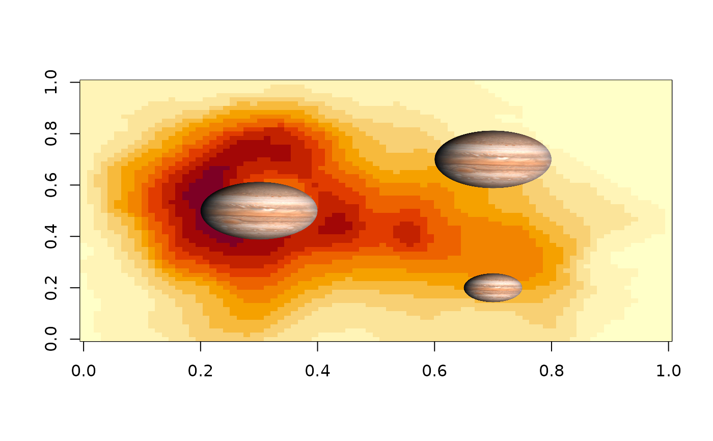

This function allows the user to add an image to an existing plot in R by specifying the image object, its position, and its size. The function calculates the necessary dimensions and places the image accordingly. The function uses the existing plot's coordinate system and accounts for the current plot dimensions to ensure accurate placement of the image. It also allows for interpolation, which can improve the visual quality of the image.
Source
The source code of this function was taken from this stackoverflow question.
Arguments
- image_object
The image object to be added to the plot, expected to be an array-like structure (e.g., as read by png::readPNG or jpeg::readJPEG).
- x, y
Numeric, the x-coordinate or y-coordinate (in plot units) at which the centre of the image should be placed.
- width
Numeric, the desired width of the image in plot units (not pixels or inches). The function will calculate the corresponding height to preserve the image's aspect ratio.
- interpolate
Logical, whether to apply linear interpolation to the image when drawing. Defaults to
TRUE. Passed directly to graphics::rasterImage. Interpolation can improve image quality but may take longer to render.
Note
The function will stop with an error message if any of the required
arguments (image_object, x, y, width) are NULL.
Examples
load_packages(png)
URL <- paste0("https://upload.wikimedia.org/wikipedia/commons/",
"e/e1/Jupiter_%28transparent%29.png")
z <- tempfile()
utils::download.file(URL, z, mode = "wb", quiet = TRUE)
pic <- png::readPNG(z)
file.remove(z) # cleanup
#> [1] TRUE
image(volcano)
add_image_to_plot(pic, x = 0.3, y = 0.5, width = 0.2)
add_image_to_plot(pic, x = 0.7, y = 0.7, width = 0.2)
add_image_to_plot(pic, x = 0.7, y = 0.2, width = 0.1)

# clean up
unlink(z)